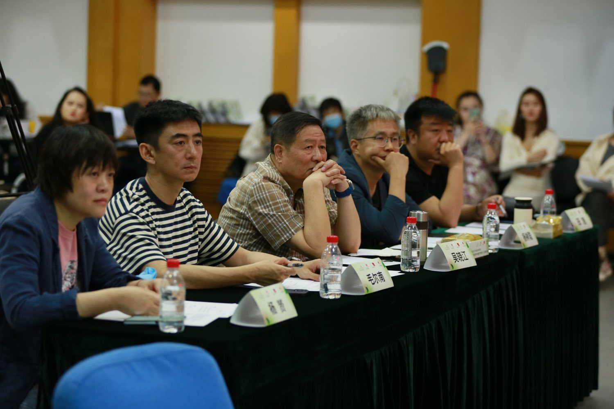
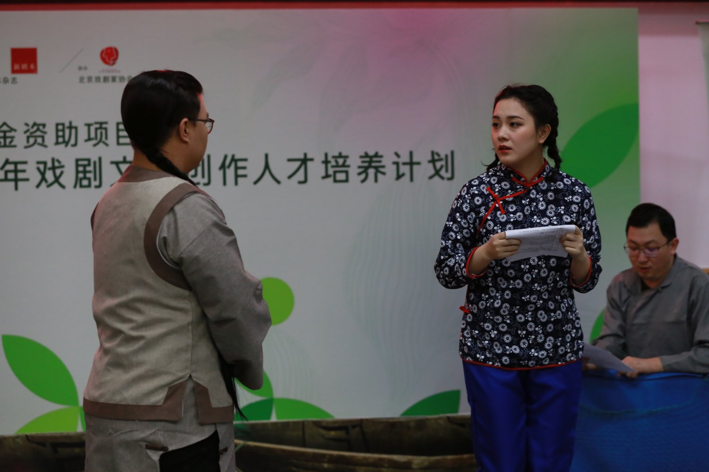
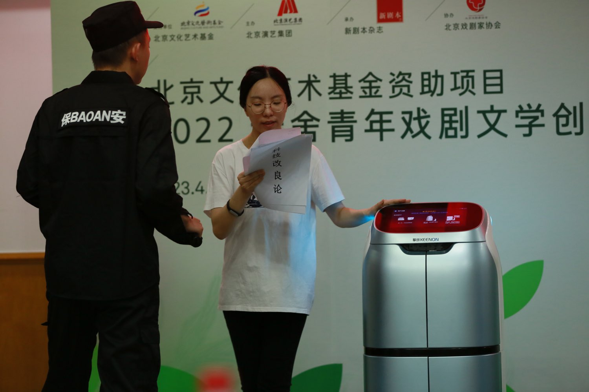
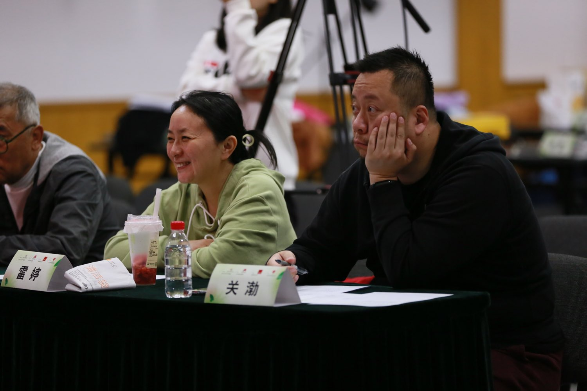
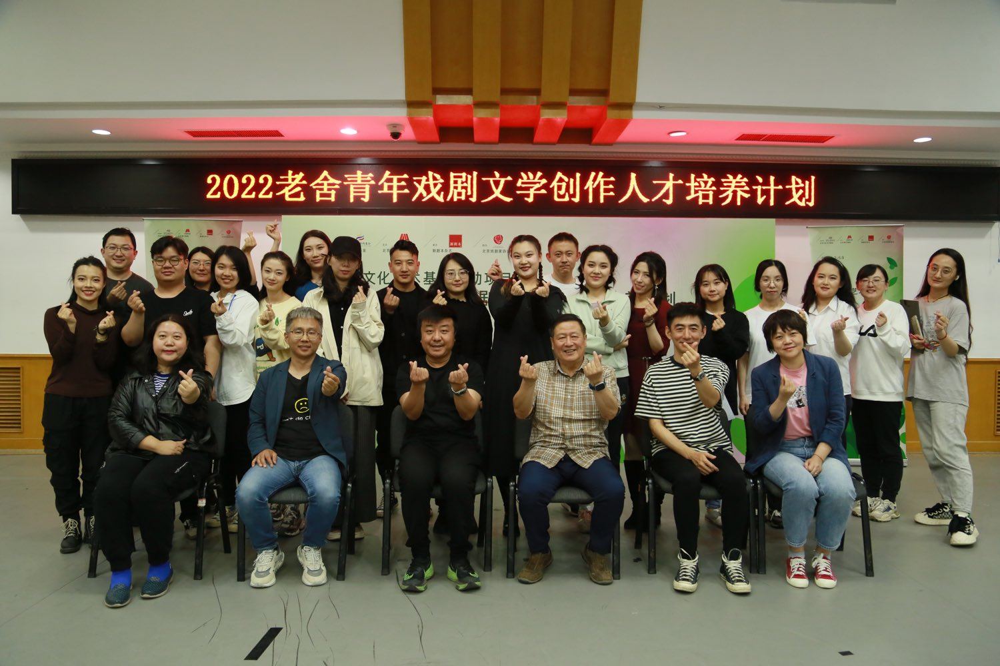

Presented by Beijing Performance & Arts Group | Funded by the Beijing Culture and Art Fund, 2022
“Twenty stories, forty-eight hours.”
The 2022 Lao She Young Playwrights Development Programme was funded by the Beijing Culture and Art Fund, presented by Beijing Performance & Arts Group, organised by New Plays magazine, and supported by the Beijing Theatre Association. It aimed to discover and support young playwrights from the Beijing–Tianjin–Hebei region. Its final stage was a 48-hour playwriting challenge: each young writer had two days to finish a play, which was then performed by actors at a staged reading.






Twenty Plays, One Backstage Team
I was responsible for costume, make-up, and set for all 20 plays, including styling and quick changes for the actors. The plays ran back to back, each only fifteen minutes long, from nine in the morning until the afternoon. The stories covered a huge range of time: fishing girls from the Ming and Qing dynasties, Han-dynasty robes and hair buns, Republican-era dresses, braces, and newsboy caps, modern delivery riders and security guards, the mythical Sha Wujing from Journey to the West, and even a family of foxes. Many actors appeared in several plays a day. An actor might be a Ming-dynasty fisherman in the morning and a security guard in the afternoon.
One of the plays, Next, Kong Yiji, needed a delivery robot. A prop could never create the same feeling, so I contacted the robotics company KEENON and borrowed a real robot from them. On stage, it was not part of the set; it was a character. In 2022, it was still rare to see a robot share the stage with actors. Looking back, it feels like a small prophecy: Lu Xun's Kong Yiji was left behind by his era, and today's Kong Yijis are facing machines and algorithms.
Another play, The Time Rental Room, needed an old 28-inch bicycle, the classic Chinese bike with a crossbar. Bikes like this are hard to find today, and I searched in many places without luck. At last, in a hutong near my school, I saw one parked by the roadside. I hesitated for a long time, and then gathered my courage and knocked on the door. The owners were an elderly couple, and they agreed to rent the bike to me. As we talked, we discovered that the wife knew my university class teacher. Before she retired, she had also worked in costume.
From then on, we became friends. Many times since, I have invited the couple to theatre performances and concerts in Beijing. One bicycle led me into a hutong, into a family, and into a friendship I never expected.
The Character’s First Line
To me, the hardest part of this work was not making beautiful looks, but time. In theatre, we usually have weeks or even months to develop a character. Here, I had about fifteen minutes. Backstage, I had to decide quickly which costume, which wig, and which prop would make the audience believe who the character was the moment the actor walked on. It made me rethink what styling really means: it is not decoration, it is the character's first line.
Twenty Worlds, Just Born
Looking back on this project, two things stay with me most: a robot borrowed from a tech company, and an old bicycle borrowed from a hutong. One points to the future, and the other comes from the past. I feel that behind every prop on stage there is a piece of real life. Working on costume, make-up, and set is not only about finding things for characters; it is about bringing the real world onto the stage, piece by piece. And sometimes, the stage brings people into my life in return.
Forty-eight hours, twenty stories, twenty worlds that had just been born. These plays may still have been young, but I was glad to give them their very first costumes.